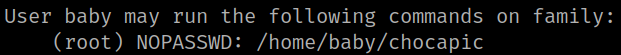
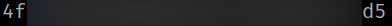

4.9 Baby's sudoer (First flag)
Look at the programs “baby” user can run as “sudo”.
1. Run the following command on dad's shell.
b👶by@family:/home/dad$ sudo -l
Output:

So “baby” user can run as user “root” the “/home/baby/chocapic” program.
2. Run the following commands to get the flag.
b👶by@family:/home/dad$ cd ..
b👶by@family:/home$ cd baby
b👶by@family:~$ ls
b👶by@family:~$ cat user.txt
Output:
